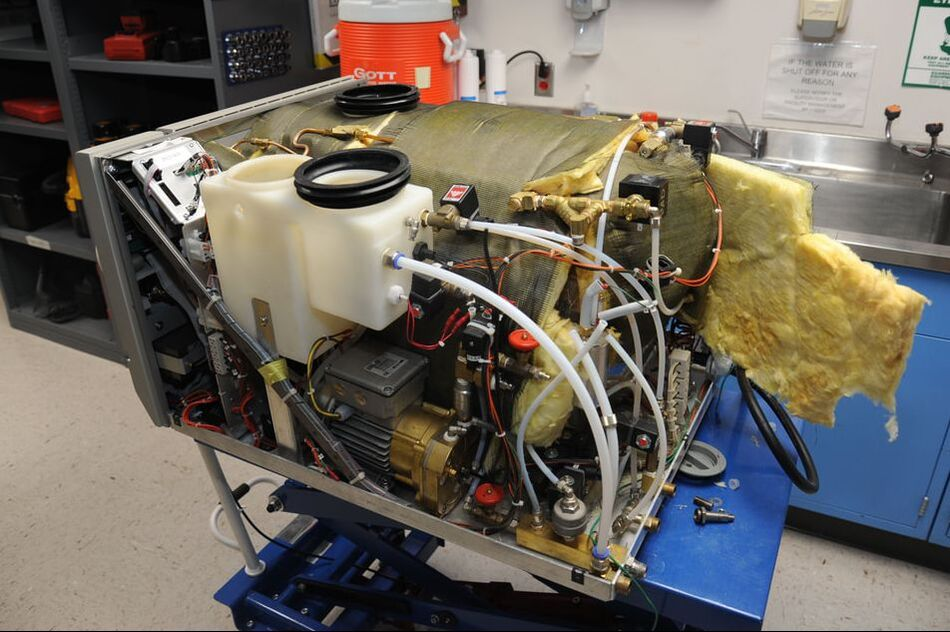

|

|
Auto Claves are essential equipment in healthcare facilities, providing a reliable and effective solution for sterilizing medical and laboratory instruments. At our company, we specialize in Auto Clave Installation services, ensuring that your equipment is properly installed, tested, and commissioned for safe and efficient operation.
Our team of experts is highly trained and experienced in the installation of a wide range of Auto Clave models and configurations. We work closely with you to understand your specific requirements and ensure that your equipment is installed to meet all necessary safety and regulatory standards.
We provide turnkey installation services, which include equipment delivery, site preparation, installation, testing, and commissioning. Our team also provides training on how to operate and maintain your Auto Clave, ensuring that you get the most out of your investment.
We understand the critical importance of keeping your Auto Clave running smoothly, and we offer ongoing maintenance and repair services to keep your equipment in top condition. Our team of experts is available to provide regular maintenance services and quick response repair services to ensure your equipment is always operating at peak performance.
At our company, we are committed to providing exceptional customer service and support. We strive to exceed your expectations in every way, ensuring that your Auto Clave Installation experience is stress-free and successful.
Contact us today to learn more about our Auto Clave Installation services and how we can help you get the most out of your equipment.
|